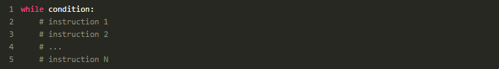
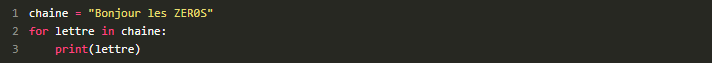
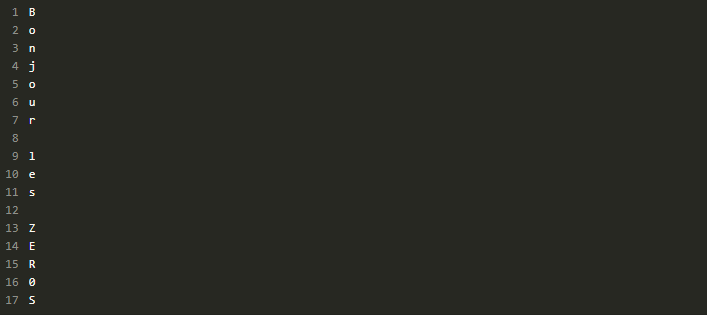
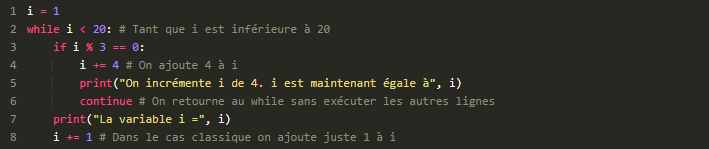
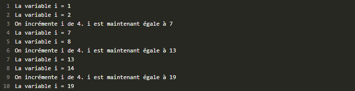

Chapitre 4 : Les boucles
-
Les boucle.. C'est quoi ?
Les boucles sont un concept nouveau pour vous. Elles vont vous permettre de répéter une certaine opération autant de fois que nécessaire. Le concept risque de vous sembler un peu théorique car les applications pratiques présentées dans ce chapitre ne vous paraîtront probablement pas très intéressantes. Toutefois, il est impératif que cette notion soit comprise avant que vous ne passiez à la suite. Viendra vite le moment où vous aurez du mal à écrire une application sans boucle. En outre, les boucles peuvent permettre de parcourir certaines séquences comme les chaînes de caractères pour, par exemple, en extraire chaque caractère.
-
La boucle while
La boucle que je vais présenter se retrouve dans la plupart des autres langages de programmation et porte le même nom. Elle permet de répéter un bloc d'instructions tant qu'une condition est vraie (whilesignifie « tant que » en anglais). J'espère que le concept de bloc d'instructions est clair pour vous, sinon je vous renvoie au chapitre précédent. La syntaxe dewhileest :
Vous devriez reconnaître la forme d'un bloc d'instructions, du moins je l'espère.
-
La boucle for
Comme je l'ai dit précédemment, on retrouve l'instructionwhiledans la plupart des autres langages. Dans le C++ ou le Java, on retrouve également des instructionsformais qui n'ont pas le même sens. C'est assez particulier et c'est le point sur lequel je risque de manquer d'exemples dans l'immédiat, toute son utilité se révélant au chapitre sur les listes. Notez que, si vous avez fait du Perl ou du PHP, vous pouvez retrouver les bouclesforsous un mot-clé assez proche :foreach. L'instructionfortravaille sur des séquences. Elle est en fait spécialisée dans le parcours d'une séquence de plusieurs données. Nous n'avons pas vu (et nous ne verrons pas tout de suite) ces séquences assez particulières mais très répandues, même si elles peuvent se révéler complexes. Toutefois, il en existe un type que nous avons rencontré depuis quelque temps déjà : les chaînes de caractères. Les chaînes de caractères sont des séquences… de caractères ! Vous pouvez parcourir une chaîne de caractères (ce qui est également possible avecwhilemais nous verrons plus tard comment). Pour l'instant, intéressons-nous àfor. L'instructionforse construit ainsi

elementest une variable créée par lefor, ce n'est pas à vous de l'instancier. Elle prend successivement chacune des valeurs figurant dans la séquence parcourue. Ce n'est pas très clair ? Alors, comme d'habitude, tout s'éclaire avec le code !
Ce qui nous donne le résultat suivant :
 -
Un petit bonus : les mots-clés break et continue
Je vais ici vous montrer deux nouveaux mots-clés,breaketcontinue. Vous ne les utiliserez peut-être pas beaucoup mais vous devez au moins savoir qu'ils existent… et à quoi ils servent.
Le mot-clébreakLe mot-clé break permet tout simplement d'interrompre une boucle. Il est souvent utilisé dans une forme de boucle que je n'approuve pas trop :

La bouclewhilea pour condition1, c'est-à-dire une condition qui sera toujours vraie. Autrement dit, en regardant la ligne duwhile, on pense à une boucle infinie. En pratique, on demande à l'utilisateur de taper une lettre (un 'Q' pour quitter). Tant que l'utilisateur ne saisit pas cette lettre, le programme lui redemande de taper une lettre. Quand il tape 'Q', le programme afficheFin de la boucleet la boucle s'arrête grâce au mot-clébreak.
Ce mot-clé permet d'arrêter une boucle quelle que soit la condition de la boucle. Python sort immédiatement de la boucle et exécute le code qui suit la boucle, s'il y en a.
C'est un exemple un peu simpliste mais vous pouvez voir l'idée d'ensemble. Dans ce cas-là et, à mon sens, dans la plupart des cas oùbreakest utilisé, on pourrait s'en sortir en précisant une véritable condition à la ligne duwhile. Par exemple, pourquoi ne pas créer un booléen qui sera vrai tout au long de la boucle et faux quand la boucle doit s'arrêter ? Ou bien tester directement silettre != « Q »dans lewhile?
Parfois,breakest véritablement utile et fait gagner du temps. Mais ne l'utilisez pas à outrance, préférez une boucle avec une condition claire plutôt qu'un bloc d'instructions avec unbreak, qui sera plus dur à appréhender d'un seul coup d'œil.
Le mot-clécontinueLe mot-clécontinuepermet de… continuer une boucle, en repartant directement à la ligne duwhileoufor. Un petit exemple s'impose, je pense :
Voici le résultat :
Comme vous le voyez, tous les trois tours de boucle,is'incrémente de 4. Arrivé au mot-clécontinue, Python n'exécute pas la fin du bloc mais revient au début de la boucle en testant à nouveau la condition duwhile. Autrement dit, quand Python arrive à la ligne 6, il saute à la ligne 2 sans exécuter les lignes 7 et 8. Au nouveau tour de boucle, Python reprend l'exécution normale de la boucle (continuen'ignore la fin du bloc que pour le tour de boucle courant).
Mon exemple ne démontre pas de manière éclatante l'utilité decontinue. Les rares fois où j'utilise ce mot-clé, c'est par exemple pour supprimer des éléments d'une liste, mais nous n'avons pas encore vu les listes. L'essentiel, pour l'instant, c'est que vous vous souveniez de ces deux mots-clés et que vous sachiez ce qu'ils font, si vous les rencontrez au détour d'une instruction. Personnellement, je n'utilise pas très souvent ces mots-clés mais c'est aussi une question de goût.